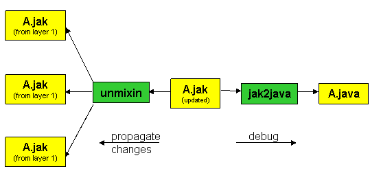

|
|
The unmixin Decomposition Tool |
unmixin is a tool that decomposes a mixin-produced .jak file(s) and propagates changes made to this file back to the constituent layer files. To invoke unmixin via a command line:
> unmixin <names of one or more files>
Without unmixin, changes must be propagated manually, which is tedious and error prone. While unmixin can't propagate every change, it certainly can do a lot and save considerable time.

unmixin has a few simple rules of operation:
When using unmixin, remember the following:
unmixin will propagate changes to a .jak file only if changes have been made. Thus, if you produce file f by mixin composition, but do not change its contents, "unmixin f" will examine f and the files that it references, but will not update these files.
Illustrations of unmixin are in the following sections:
Updating Interface Declarations |
Consider the following interface (top.jak) and refinement (mid.jak):
layer first; interface MyInt extends FooInterface { int Silent = 0; void foo() throws AFit; SomeType bar( int x ); }
layer second; public transient refines interface MyInt extends yyy, java.io.Serializable { int Terse = 2; void foo() throws SomeException; int increment( int i ); }
Shown below is the mixin composition of these files, along with hand-made changes highlighted in yellow:
layer first;
SoUrCe RooT first "top.jak";
abstract interface MyInt$$first extends FooInterface {
int Silent = 0;
void foo() throws AFit, moreFits;
SomeType bar( int x );
}
SoUrCe second "mid.jak";
public transient interface MyInt extends yyy, java.io.Serializable, MyInt$$first {
int Terse = 3;
void foo() throws SomeException;
int increment( int i );
}
To back-propagate these changes, execute
> unmixin Result.jak
unmixin takes a single file as its argument and has no optional parameters.
Try the example above.
Updating Class Declarations |
Consider the following class declaration (top.jak) and refinement (mid.jak):
layer first; class top { int jj; top(int rj) { jj = rj; } void foo(float x, float y) { /* do something */ } }
layer second; refines class top implements java.io.Serializable, xxx { static int k; top(float x) { /* do something */ } float foobar() { Super(float,float).foo(0, 0); } public void foo( float x, float y ) { /* something more */ } }
The result of their composition using mixin is shown below, along with hand-made changes indicated in yellow.
layer first; SoUrCe RooT first "top.jak"; abstract class top$$first { int jj; top$$first(int rj) { jj = rj; } void foo(float x, float y) { /* do something */ }void biff() { /* a new method */ } } SoUrCe second "mid.jak"; class top extends top$$first implements java.io.Serializable, xxx, yyy { static int k;public int global = 0; // a new variable top(float x) { /* do something */ } float foobar() { Super(float,float).foo(0, 0); } public void foo( float x, float y ) { /* something more */ /* extra */ } }
Let the resulting file above be Result.jak. To back-propagate these changes, execute
> unmixin Result.jak
Try the example above.
Updating State Machine Declarations |
Consider the following state machine declaration (top.jak) and refinement (mid.jak):
layer first; state_machine root { event_delivery mymessage( M m ); no_transition { ignore(m); } states g, h, i; edge e1 : g -> h conditions m!=null do { gh(); } edge e2 : h -> i conditions true do { /*nothing*/ } void gh() { /* gh action */ } }
layer second; refines state_machine root { states j, k; edge e3 : g -> j conditions m!=null do { anotherAction(5); } edge e66 : j -> k conditions true do { gh(); } void anotherAction(int f) { /* do something */ } }
The result of their composition using mixin is shown below, along with hand-made changes indicated in yellow:
layer first; SoUrCe RooT first "top.jak"; abstract state_machine root$$first { event_delivery mymessage( M m ); no_transition { ignore(m); } states g, h, i; edge e1 : g -> h conditions m!=null do { gh(); } edge e2 : h -> i conditions true do { /*nothing*/ }edge newedge : g -> h conditions true do { gh(); } // new edge void gh() { /* gh action */ } } SoUrCe second "mid.jak"; state_machine root extends root$$first { states j, k, g; edge e3 : g -> j conditions m!=null do { anotherAction(5); } edge e66 : j -> k conditions true do { gh(); } void anotherAction(int f) { /* do something */ } public static void main( String args[] ) { /* main */ } }
Let the resulting file above be Result.jak. To back-propagate these changes, execute
> unmixin Result.jak
Try the example above.
Limitations, Future Versions and Known Problems |
Copyright © Software Systems Generator Research Group.
All rights reserved.
Revised: January 25, 2006.